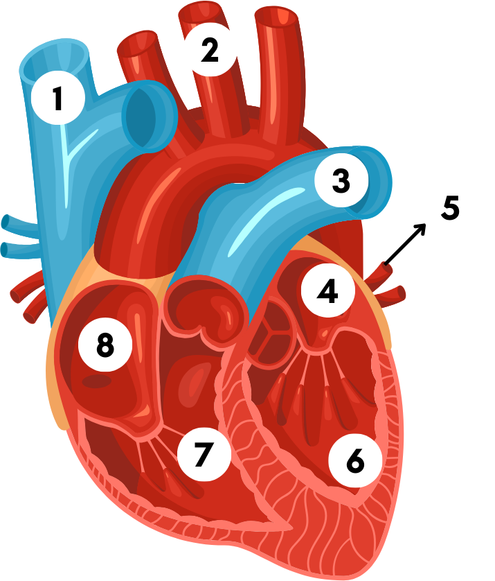

Sistema Cardiovascular
O sistema cardiovascular desempenha um papel fundamental na manutenção da vida e da saúde do corpo humano. Composto pelo coração, vasos sanguíneos e sangue, esse sistema complexo trabalha em harmonia para fornecer oxigênio, nutrientes e outros elementos essenciais aos tecidos do organismo, ao mesmo tempo em que remove resíduos metabólicos e mantém a temperatura e a estabilidade interna do corpo.
Coração
É o motor do sistema circulatório, localizado no centro do peito, o
coração é dividido em quatro câmaras: dois átrios superiores e dois
ventrículos inferiores. Os átrios recebem o sangue que retorna ao
coração, enquanto os ventrículos bombeiam o sangue para fora do
coração e para os pulmões ou para o resto do corpo, dependendo do lado
do coração.
Controlado pelo sistema nervoso autônomo e pelo sistema de condução
cardíaca, o coração coordena seus batimentos para garantir uma
circulação eficiente do sangue.

- 1 - Veia cava superior
- 2 - Aorta
- 3 - Artéria Pulmonar
- 4 - Átrio Esquerdo
- 5 - Veia Pulmonar
- 6 - Ventrículo Esquerdo
- 7 - Ventrículo Direito
- 8 - Átrio Direito
Vasos Sanguíneos
Os vasos sanguíneos são os condutos que transportam o sangue pelo corpo. Eles incluem:
Artérias
São responsáveis por transportar sangue rico em oxigênio do coração para os tecidos. Elas têm paredes musculares espessas e elásticas que ajudam a impulsionar o sangue sob alta pressão.
Veias
Transportam sangue pobre em oxigênio dos tecidos de volta ao coração. Suas paredes são mais finas em comparação com as artérias e contêm válvulas para impedir que o sangue flua na direção errada.
Capilares
São os vasos sanguíneos mais pequenos e finos, onde ocorre a troca de substâncias entre o sangue e as células dos tecidos.
Sangue
O sangue é um fluido vital que transporta oxigênio, nutrientes,
hormônios e resíduos metabólicos pelo corpo.
É composto por células sanguíneas, sendo elas os glóbulos vermelhos,
glóbulos brancos e plaquetas, suspensas em um líquido chamado plasma,
o sangue desempenha diversas funções essenciais para a saúde do
organismo.
Glóbulos Vermelhos
Os eritrócitos transportam oxigênio dos pulmões para os tecidos do corpo e transportam dióxido de carbono dos tecidos de volta aos pulmões para eliminação.
Glóbulos Brancos
Os leucócitos são parte do sistema imunológico, ajudam a combater infecções e doenças.
Plaquetas
Fragmentos celulares envolvidos na coagulação sanguínea para prevenir e controlar o sangramento.
Plasma
Composto principalmente por água, mas também contém proteínas, hormônios, eletrólitos e nutrientes, entre outras substâncias.
Quiz!
Algumas curiosidades sobre o sistema cardiovascular